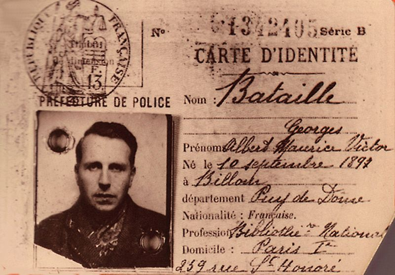

list of old issues
Drei Cafe #3
Palmer & Solder / Bataille / The Soul
Hi,
I saw a bit how 'Victorians feel like they're living in a parallel universe', bang-on I reckon, it's a bubble universe over here, a limbo cut off from the Real, in which I read a lot of books, do some push-ups, go for a run, drink three beers every weeknight, goof around with Becca. It's pretty good as long as work goes well, I had a tough week and went loopy but it's been a rainy weekend, which is heaps cozy. I'm buying beer by the slab now, I've never been a 'slab guy' before. If you walk down the street with a slab on your shoulder you're afraid of no-one, it's pretty cool. Not that there's anyone in my neighbourhood to really be afraid of. The reckless eight-year-olds on their tiny bikes perhaps.
The one thing that really shits me about this neighbourhood is that someone had gone to the trouble of making snarky laminated "in this neighbourhood we pick up our dog's poos" signs, and staking them in the ground in the bit between the footpath and the road, I'm sure there's a name for that bit, you know the bit I mean. They make me irrationally annoyed, I just know there's a child involved and a smug parent and a laminating machine whirring in Papa's Study. One of the signs says "there is no poo fairy!". Tell me that doesn't make you want to sneak out of the house at 3am and take a dump beside it.
I AM READING A BOOK
On my bookshelf there's an 'embarrassing books' section, they're on the bottom shelf, like shit wine or baked beans in the pantry. One of the books is called You Need This Book To Get What You Want by Mark Palmer and Scott Solder.
I got it for a fiver or something, in I think 2011? I'd just moved to Melbourne, I went into the city to buy a shirt, there was one of those pop-up places that sell bad books for cheap. I saw You Need This Book and thought: right, I'm a young boy in a big city, I need all the help I can get. I do this thing, when I'm buying a book or greeting card that I'm embarrassed by, where I put it face down and hope the shop-person will scan the barcode without looking at the cover. Well they weren't scanning barcodes. I remember the shop-lady looked at me, flipped the book around to look at the pricetag on the cover, and looked at me again. Now I think she didn't give a single shit, but at the time I wanted to crawl into a ditch forever.
The book tells you how to 'get what you want' with fun psychological tricks. It's British and from 2010 so they're benign like "imagine a big red button in your head when you want to say no", not creepy like "make your crush a mix CD but record yourself whispering you need me between tracks". One of the sections is 'how to get served first at the bar'. I'm going to spill the secret now, I hope you're writing this down! According to the book what you want to do is pick a bartender and then try and match your mood to theirs. If there's a grumpy bartender you start scowling, if a happy one is bouncing about, you put spring in your step. In my eight years of attempting this, I don't think it's ever worked, but I still do it sometimes.
There's another bit where the author brags about quitting smoking a bit before admitting but I still smoke when I drink alchohol because I like it. Lol I quit eight years ago by that metric. I even quit smoking my own cigarettes, now I just smoke other people's. Maddie I'm sorry I owe you a pouch from last time.

I'm now reading Erotism: Death and the Erotic by Georges Bataille, it's about violence and the erotic. Bataille is a spooky French philosopher from the first half of last century with great concepts such as the Solar Anus and the Accursed Share, everything you want from a Frenchman. That's his ID card there if you want to do some identity fraud.
In the introduction Bataille talks of us as discontinuous beings, we've a gulf between one another, we are born alone and die alone. He contrasts that with moments of continuity in reproduction: both asexual (a being splits into two beings e.g. a cell divides in two) and sexual (two beings make one being e.g. mummy and daddy love each other, daddy's sperm meets mummy's ovum). With the first, there is continuity only in the moment of splitting (the doubles are necessarily distinct and discontinuous), with the latter the continuity is the point of merging.
But the way I read it is: there is more continuity in blending with another and making a third, than in splitting yourself into two. If you split into two identical copies, which one is you? Neither one can be more you than the other, all three are discontinuous. But if you meld with another to make a third, there is more continuity in your offspring, although it comes from you+another intertwined. Especially if you are 'destroyed' in this melding! The death of the sperm paradoxically leads to it's continuity (I can't believe I typed that). Look at it this way: if I copy all the words from one book into two new books, I have three identical books, yet nothing truly new has been created. But what if I take words from one book, words from some other book, and combine them to write a third?
THE SOUL
I can't stomach podcasts at the moment, so I've been listening to the lectures of celebrated Russian literary critic Dmitry Bykov when jogging (they're in Russian sorry). In the latest one Bykov told this cute story about his wife and himself. So when they first moved in together, she was quite religious and he wasn't, really. And at that time he was going through an existential crisis. He'd wake up in the middle of the night in existential terror, he'd shake her awake and ask: "is the soul immortal? Tell me the soul is immortal!" He needed her to convince him of the immortality of the soul; he could not sleep otherwise.
At first she'd oblige and he'd fall back asleep. Then a night or two after, the existential terror would return, and he'd be shaking her awake at fuck off o'clock, "tell me of the soul's immortality! Tell me!!!". Eventually she got so sick of it that she began to insist the opposite. "No, there is no soul and it's not immortal, now let me sleep you parasite!" That, to him, was much more convincing. Now he believes firmly that the soul is immortal. It didn't stick before, when she said no.
PERSONAL LIFE
In my personal life, I've been writing these letters and it's been fun, thanks for reading! Thanks too for the kind feedback.
My plan is to do ten newsletters and call it. They'll be about five to seven days apart. If you have a mate who you reckon might like to read this stuff, do tell them about it! Point them to the sign-up sheet at https://mailchi.mp/d4f3702e0519/sign-up-page-for-dreis-newsletter
Hope you're good bye!
Bye,
Drei
23 Aug 2020
If you like this and have a mate who you reckon might like this, please send them to www.dreicafe.com where I have a sign up sheet for this newsletter! There is also a link to old issues there !!!
© 2020 Drei Cafe